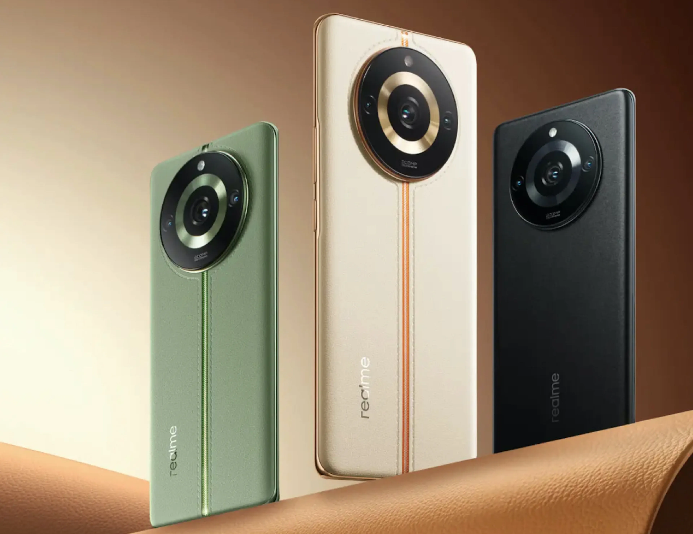
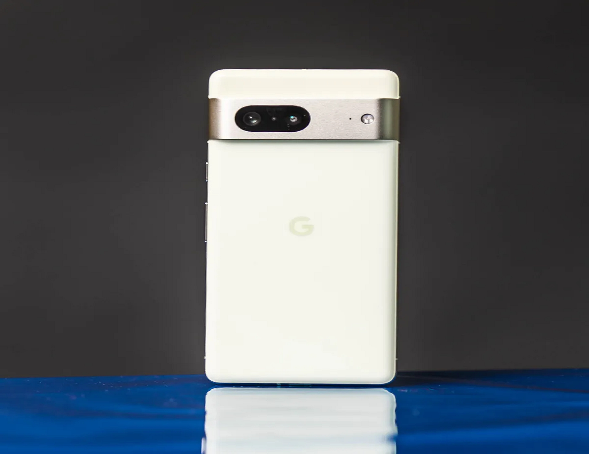

<!DOCTYPE html>
<html lang="es">
<head>
    <script async src="https://pagead2.googlesyndication.com/pagead/js/adsbygoogle.js?client=ca-pub-1889922442808171"
     crossorigin="anonymous"></script>
    <meta charset="UTF-8">
    <meta name="viewport" content="width=device-width, initial-scale=1.0">
    <title>Document</title>
    <style>
        body {
            font-family: Arial, sans-serif;
            margin: 0;
            padding: 0;
            display: flex;
            flex-direction: column;
            align-items: center;
        }
        .header {
            width: 100%;
            background-color: #f8f8f8;
            padding: 20px 0;
            text-align: center;
        }
        .menu {
            display: flex;
            justify-content: space-between;
            align-items: center;
            width: 80%;
            margin: 0 auto;
        }
        .navbar ul {
            list-style: none;
            padding: 0;
            display: flex;
        }
        .navbar ul li {
            margin: 0 15px;
        }
        .navbar ul li a {
            text-decoration: none;
            color: #333;
        }
        .header-content {
            padding: 20px;
            text-align: center;
        }
        .btn-1 {
            display: inline-block;
            margin-top: 20px;
            padding: 10px 20px;
            background-color: #007bff;
            color: #fff;
            text-decoration: none;
            border-radius: 5px;
        }
        .coffee {
            width: 80%;
            margin: 20px auto;
            text-align: justify;
            font-size: x-large;
        }
        .coffee img {
            max-width: 100%;
            height: auto;
        }
        .coffee-content {
            padding: 20px;

        }
        .coffee-group {
            display: flex;
            justify-content: space-around;
            flex-wrap: wrap;
        }
        .coffee-1 {
            flex: 1;
            margin: 20px;
            padding: 20px;
            border: 1px solid #ccc;
            border-radius: 5px;
            background-color: #f8f8f8;
        }
        h2 {
            font-size: 5.9rex;
            font-weight: 700;
            color: #333;
            margin-bottom: 30px;
        }
        @media (max-width: 768px) {
            h2 {
                font-size: 2rem; /* Reducir tamaño en dispositivos más pequeños */
            }
        }
    </style>
</head>
<meta charset="UTF-8">
    <meta name="viewport" content="width=device-width, initial-scale=1.0">
    <title>Título de tu página</title>
</head>
<body>
 
</body>
</html>
    </div>
    <header class="header">
        <div class="menu container">
            <a href="#" class="logo"></a>
            <nav class="navbar">
                <ul>
                    <li><a href="#">Inicio</a></li>
                    <li><a href="#">Contacto</a></li>
                    <li><a href="#">Nosotros</a></li>
                    <li><a href="#">Servicios</a></li>
                    
                </ul>
            </nav>
        </div>
        <div class="header-content container">
            <h2>
                Los mejores celulares del 2024
            </h2>
        </div>
    </header>
    <section class="coffee">
        
            
            <h2>Realme 11 Pro</h2>
           <p>
            El Realme 11 Pro ha llegado al mercado como una opción destacada en términos de relación calidad-precio para el año 2024. Este smartphone combina un diseño atractivo con especificaciones competitivas que lo posicionan como una excelente alternativa en el segmento de gama media. Equipado con un procesador potente y eficiente, el Realme 11 Pro ofrece un rendimiento sólido que permite ejecutar aplicaciones exigentes y disfrutar de juegos sin problemas de velocidad ni de almacenamiento.
           </p>
           <p>
            En el aspecto fotográfico, el Realme 11 Pro no defrauda gracias a su sistema de cámaras versátil. La cámara principal captura imágenes claras y detalladas, mientras que las cámaras adicionales, como las de gran angular y macro, amplían las posibilidades creativas del usuario. Esto asegura que puedas capturar cada momento con calidad y precisión, adaptándose a diferentes condiciones de luz y escenarios.
           </p>
           <p>
            Además de su rendimiento y capacidades fotográficas, el Realme 11 Pro cuenta con una pantalla de alta resolución que ofrece colores vibrantes y detalles nítidos. Ideal para disfrutar de contenido multimedia inmersivo y navegar por aplicaciones con fluidez, esta pantalla añade un valor significativo a la experiencia de usuario. Complementando estas características, una batería de larga duración asegura una autonomía suficiente para todo el día, permitiendo un uso prolongado sin preocupaciones.
           </p>
            <p>-ESPECIFICACIONES</p>
            <ul>
                <li>Procesador Dimensity 7050 5G</li>
                <li>Pantalla de curva de 120 Hz</li>
                <li>RAM y almacenamiento: 8 GB + 256GB</li>
                <li>Cámara ProLight OIS de 100 MP</li>
                <li>Gran batería de 5000 mAh</li>
                <li>precio: 360-380 euros</li>
            </ul>
            
        </div>
    
            
                <h2>Samsung A54</h2>
                <p>
                    El Samsung Galaxy A54, lanzado en 2023, se ha convertido en una opción aún más atractiva en 2024 gracias a su notable reducción de precio. Este dispositivo de la serie A destaca por ofrecer un equilibrio perfecto entre rendimiento, diseño y funcionalidad, haciéndolo ideal para el uso cotidiano y una amplia gama de usuarios. Con un precio más accesible, el Galaxy A54 se posiciona como una opción recomendable para aquellos que buscan un celular confiable y versátil.
                </p>
                <p>
                    El Galaxy A54 cuenta con una pantalla Super AMOLED de alta resolución que proporciona colores vivos y detalles nítidos, perfecta para disfrutar de contenido multimedia y navegar por las redes sociales. Su procesador eficiente asegura un rendimiento fluido en todas las tareas diarias, desde la gestión de aplicaciones hasta la multitarea. Además, la batería de larga duración garantiza que puedas usar el dispositivo durante todo el día sin preocuparte por la carga.
                </p>
                <p>
                    En el apartado fotográfico, el Samsung Galaxy A54 no decepciona. Equipado con un sistema de cámaras versátil, permite capturar fotos claras y detalladas en diversas condiciones de iluminación. La cámara principal ofrece una calidad de imagen excelente, mientras que las cámaras adicionales, como la de gran angular y la de profundidad, amplían tus posibilidades creativas. Estas características hacen que el Galaxy A54 sea perfecto para quienes disfrutan documentando su día a día con fotos de alta calidad.
                </p>
                <p>-ESPECIFICACIONES</p>
                <ul>
                    <li>Pantalla: AMOLED de 6,4 pulgadas Resolución FullHD+</li>
                    <li>procesador: Exynos 1380</li>
                    <li>Bateria: 5.000 mAh</li>
                    <li>Almacenamiento: 128 y 256 GB</li>
                    <li>Camara principal : 50 MP</li>
                    <li>precio :320-340 euros </li>
                </ul>
                
            </div>
        </div>
        <h2>Xiaomi Redmi 13 pro 5G</h2>
        <p>
            El Xiaomi Redmi 13 Pro 5G es uno de los celulares con mejor relación calidad-precio de 2024. Xiaomi ha logrado crear un dispositivo que combina características avanzadas, diseño elegante y un precio accesible, convirtiéndolo en una opción atractiva para una amplia gama de usuarios. Este modelo se destaca por ofrecer un rendimiento sobresaliente y una conectividad de última generación gracias a su compatibilidad con redes 5G.
        </p>
        <p>
            El Redmi 13 Pro 5G cuenta con una pantalla de alta resolución que brinda una experiencia visual inmersiva, ideal para disfrutar de contenido multimedia y juegos. Su procesador de última generación garantiza un rendimiento fluido y eficiente, permitiendo ejecutar múltiples aplicaciones simultáneamente sin problemas. Además, su batería de gran capacidad asegura una autonomía prolongada, manteniéndote conectado y productivo durante todo el día.
        </p>
        <p>
            En el apartado fotográfico, el Redmi 13 Pro 5G no se queda atrás. Equipado con un sistema de cámaras versátil, ofrece una calidad de imagen excepcional en diversas condiciones de luz. La cámara principal captura fotos nítidas y detalladas, mientras que las cámaras adicionales proporcionan funciones avanzadas como el gran angular y el modo retrato. Estas características hacen que el dispositivo sea ideal para aquellos que disfrutan capturando momentos especiales con su smartphone.
        </p>
        <p>-ESPECIFICACIONES</p>
        <ul>
            <li>Pantalla: AMOLED de 6.67 pulgadas</li>
            <li>Procesador:Snapdragon® 7s Gen 2</li>
            <li>RAM y almacenamiento: 8 GB + 256GB</li>
            <li>Cámara trasera: 200 megapíxeles</li>
            <li>Batería:5100 mAh</li>
            <li>precio : 300-320 euros</li>
        </ul>
        
        <h2>Google Pixel 7</h2>
        <p>
            Google llega con todo para demostrar su excelencia en todas las áreas con su más reciente lanzamiento. Su dominio como fabricante se refleja en un catálogo completo y representativo que abarca desde dispositivos económicos hasta opciones de gama alta, todos con un sello de calidad distintivo. El nuevo modelo destaca por su innovador diseño y sus especificaciones técnicas de alto nivel, lo que lo convierte en una opción atractiva para una amplia gama de usuarios.
        </p>
        <p>
            Uno de los aspectos más sobresalientes de este dispositivo es su cámara, que se posiciona como una de las mejores en su categoría. Equipado con tecnologías avanzadas de procesamiento de imagen y capacidades fotográficas excepcionales, permite capturar fotos nítidas y detalladas en diversas condiciones de iluminación. Los aficionados a la fotografía encontrarán en este celular una herramienta poderosa para llevar su creatividad al siguiente nivel. Además, la cámara incluye funciones como el modo nocturno y el HDR, que mejoran aún más la calidad de las imágenes.

        </p>
        <p>
            A pesar de su enfoque en la excelencia, el dispositivo mantiene un precio asequible, lo que lo hace accesible para un amplio público. Este celular no solo sobresale en el apartado fotográfico, sino que también ofrece un rendimiento fluido gracias a su procesador de última generación y una batería de larga duración que asegura una experiencia de uso continua y sin interrupciones. Si te apasiona la fotografía y buscas un celular que combine calidad, rendimiento y buen precio, este modelo de Google es la opción ideal para ti.
        </p>
        <p>-ESPECIFICACIONES</p>
        <ul>
            <li>Pantalla: OLED de 6,3 pulgadas</li>
            <li>Procesador: Google Tensor G2</li>
            <li>Ram y almacenamiento : 8 GB + 256GB</li>
            <li>Camara: 50 megapíxeles</li>
            <li>Bateria : 4.355 mAh</li>
            <li>precio : 450 - 500 euros </li>
        </ul>
        
        <h2>Poco x6 pro</h2>
        <p>
            El Poco X6 Pro es un celular lanzado por Xiaomi en 2024 que se posiciona como uno de los dispositivos más baratos y potentes del mercado actual. Con un precio accesible y especificaciones que compiten con los celulares de gama alta, el Poco X6 Pro se destaca en potencia y rendimiento.
        </p>
        <p>
            Este smartphone es ideal para aquellos que buscan una experiencia fluida y rápida en juegos y consumo de redes sociales. Equipado con un procesador de última generación, gran capacidad de memoria RAM y una pantalla de alta calidad, el Poco X6 Pro asegura un rendimiento óptimo en las tareas más exigentes.
        </p>
        <p>
            Además, su diseño elegante y moderno, junto con una batería de larga duración y una cámara versátil, lo convierten en una excelente opción para usuarios que valoran tanto el rendimiento como la estética. Si buscas un celular que ofrezca una experiencia de uso superior sin romper el banco, el Poco X6 Pro es la mejor opción.
        </p>
        <p>-ESPECIFICACIONES</p>

        <ul>
            <li>Pantalla: AMOLED 6,67 pulgadas</li>
            <li>Procesador: MediaTek Dimensity 8300 Ultra</li>
            <li>Ram y almacenamiento : 8 GB + 256GB</li>
            <li>Camara:  64 megapíxeles</li>
            <li>Bateria : 5000 mAh</li>
            <li>precio: 320-280 euros</li>
        </ul>
        
    </section>
</body>
</html>


